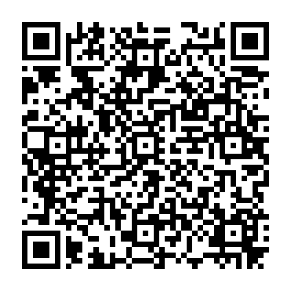

AR STUDIO / CAMERA COMPARE 1Лист A · куб
Откройте камеру → считайте QR → наведите на метки. Safari следует за Hiro; ARKit распознаёт уникальный QR как изображение и закрепляет модель в пространстве.
Модель находится над Hiro. При вертикальном экране она выступает из плоскости экрана. Не двигайте экран и не меняйте масштаб PDF в ходе теста.

Центры меток: 80 мм · полный QR: 40 мм
100 мм — проверьте линейкой